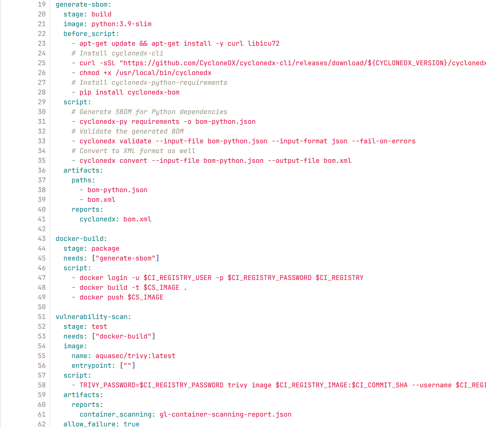

Contexte
Stage axé sur la sécurisation des applications conteneurisées. Travail dans un environnement DevOps avec intégration continue.
Missions réalisées
- Scan de vulnérabilités avec Trivy
- Génération de SBOM
- Signature d’images Docker avec Cosign
- Mise en place de pipelines GitLab CI/CD sécurisés
Résultats
Automatisation complète de la sécurité des images Docker, amélioration de la traçabilité et de la conformité.
Exemples visuels

